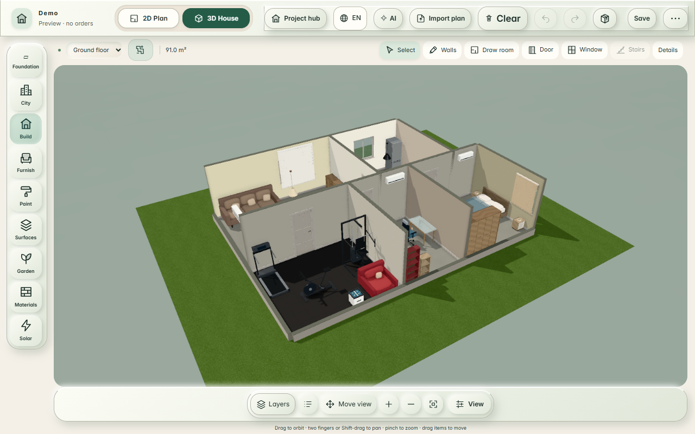
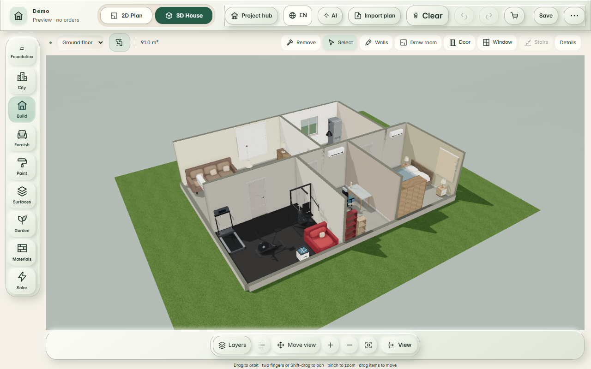

One Live Build · adaptive graphics comparisonOne Live Build · adaptive desktop shading
1280 × 800 px browser; identical 1168 × 592 canvas. Each actual app used its ordinary Fit control after loading. Logical camera, rendered camera and canvas dimensions match exactly. No scene or camera values were injected and no replacement images were generated. Separate orbit metrics use the default app layout and count completed scene renders over ten seconds of real pointer movement on Intel Iris Xe / D3D11.
Desktop Auto trials corner shading, retaining it only at a measured 45 FPS or faster. This test GPU fell below the AO threshold, so Auto remained direct. Default visual parity is not achieved on this device. Manual High retains AO, but runs below 45 FPS. Phones keep AO off. Cold first-load time is recorded separately and not optimized.
Before/live orbit data · After orbit data · Exact matched-camera evidence
Live · Auto

37.1 rendered FPS · natural-depth
Navigation → first 3D frame: 12.97 s
Original policy
Reference camera
After · adaptive Auto
60.0 rendered FPS · natural-basic
Navigation → first 3D frame: 8.10 s
Benchmark Auto decision: disabled · measured AO: 15.9 FPS
Logical camera, rendered camera and canvas dimensions match live
After · manual High

40.2 rendered FPS · natural-depth
Navigation → first 3D frame: 2.41 s
Benchmark Auto decision: manual · measured AO: not applicable FPS
Logical camera, rendered camera and canvas dimensions match live
What remains different
Live shading remains darker at room intersections and across the background. The preview keeps its existing lighter appearance, including manual High. These images make the remaining difference visible; they do not claim matching realism.
The untouched initial boot camera had a 0.00032 rad rendered-field-of-view difference after the toolbar layout change. This contact sheet uses the separate matched-canvas/Fit captures; the original measurements retain their actual unmatched projection metadata.